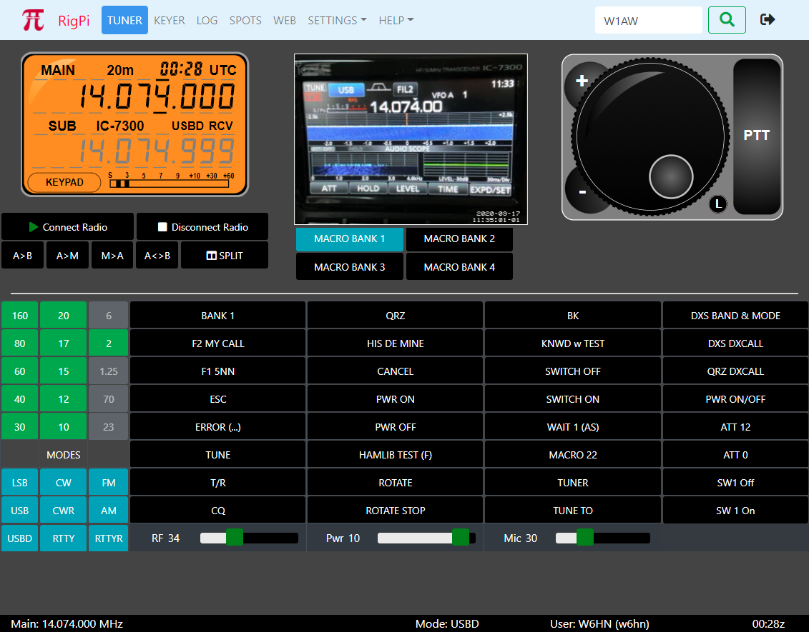
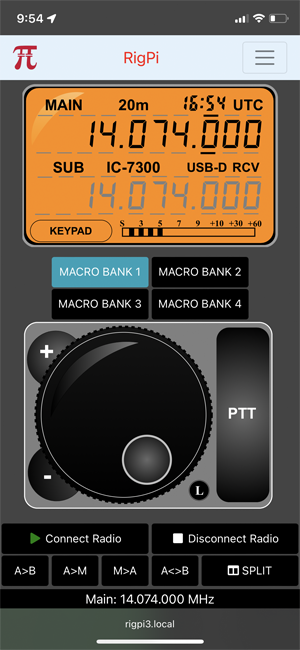
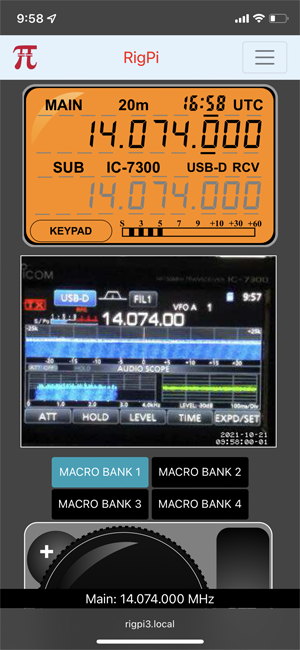
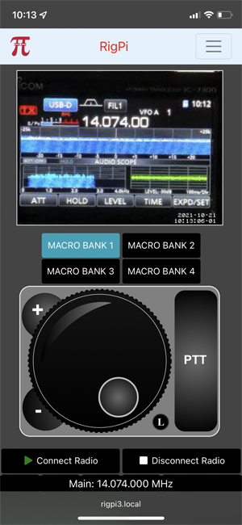

Motion is an application for creating streaming video. Motion is installed and configured on RigPi. The primary use for RigPi video is to keep an eye on your radio while operating remotely.

Motion can use most webcams. Plug a webcam into one of the USB ports on RigPi and Motion will find it.
Extensive control over Motion is provided through a configuration file. To view and edit this file, use the following command from Terminal:
sudo nano /etc/motion/motion.conf
For example, if you wish to disable Motion if you will not use the video feature, edit the line 'daemon on' to 'daemon off'. The height of width of the camera image is determined by the height and width parameters. This affects the size of the capture image, not the displayed image. You can see the captured image in rigpi4.local:8081. Increasing the frame-rate will decrease the video lag time, but will increase the computing resources required.
You can change the width and height of the image in the Tuner window by editing the html in /var/www/html/index.php. There are three places the size can be changed.
The Motion log is located in /var/log/motion/motion.log

RigPi RadioCam video can replace the Tuning Knob, S-meter or Frequency panel on the Tuner window. See the Advanced Radio Settings topic for how to set the mode you wish to use.
The view option you choose in Advanced Radio settings will affect the appearance of video on a mobile device.
No Video: the Frequency Panel and Tuning knob are shown.

Video -> S-meter: The Frequency Panel, Video and Tuning Knob are shown.

Video -> Frequency Panel: Video and Tuning Knob are shown

For more help, go to
https://motion-project.github.io/
If the frame for the video shows with no contained video, check the ad blocker on the browser you are using. If using Chrome on iOS, go to Chrome settings and enable Allow Cross-Website Tracking.